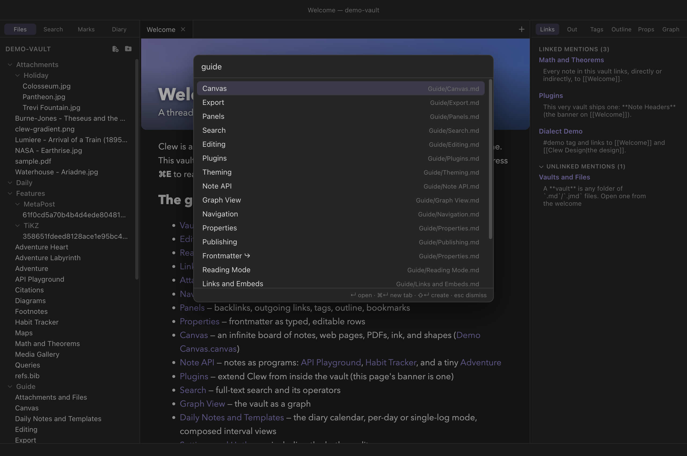
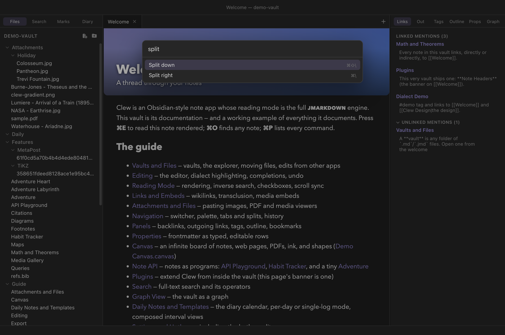

Workspace
Navigation, tabs and splits
A vault of a few hundred notes is only useful if any one of them is a second away. Clew gives you three fast routes to anywhere — the quick switcher, the command palette, and the links woven through your notes — and a workspace of tabs and split panes to hold what you find. This chapter covers all of it: how tabs open, navigate, pin, and remember where they have been; how to split the window; and how multiple vaults map onto multiple windows.
The quick switcher
Press ⌘O to open the quick switcher: a single text field that
fuzzy-matches against every note in the vault — by file name, by any
alias declared in a note's frontmatter, and by path — and against every
canvas as well. Fuzzy matching means the characters you type need only
appear in order, not adjacently: rmode finds
Reading Mode, gu/nav finds
Guide/Navigation. Results that match an alias are marked with a
small ⤷ arrow, and each row shows the full vault path so
same-named notes in different folders stay distinguishable.

From the switcher, four keys do everything:
- Enter opens the selected result in the current tab, following the usual navigation rules described below.
- ⌘Enter opens the selected result in a new tab instead. Clicking a result with ⌘ held does the same.
- ⇧Enter creates a note with exactly the name you have typed, whether or not any results are showing. When nothing matches at all, the result list itself offers the same thing. This makes the switcher the fastest way to start a new note: ⌘O, type the title, ⇧Enter, and you are writing.
- Esc dismisses the switcher, as does clicking anywhere outside it.
The command palette
Press ⌘P for the command palette: the same modal, but listing every command Clew knows — file operations, navigation, formatting, exports, theme switches, everything registered by the app or by an enabled plugin. Each entry shows its current hotkey, including any rebindings you have made in the hotkey editor, so the palette doubles as a live cheat sheet. Commands that make no sense in the current context — editor commands while a canvas is focused, say — are filtered out rather than shown disabled.

Navigating from links
The third route through a vault is the vault itself. In the editor,
hold ⌘ and click a [[wikilink]] to follow it;
add ⌥ to open the target in a new tab. In reading mode a
plain click follows a link, and ⌘-click opens it in a new
tab. A link to a note that does not exist yet creates it, Obsidian-style —
in the vault root for a bare name, at the written path for a path-form
link. Links of the form [[Note#Heading]] land
on that heading — the cursor jumps there in source mode, reading mode
scrolls to it — and [[#Heading]] jumps within the current
note.
Beyond inline links, nearly everything in the panels is a navigation surface: backlinks and unlinked mentions jump to the exact line they sit on, outgoing links open (or create) their targets, the outline jumps to a heading, tags expand into note lists, bookmarks open with a click, and nodes in the graph view open the notes they represent.
Tabs
What a tab can hold
A tab is not only a note. Clew's workspace knows six kinds of tab:
- Note tabs hold a Markdown file, in source or reading mode (⌘E toggles).
- File tabs are viewers for non-note files — images, PDFs, media — opened from the explorer or from links.
- Canvas tabs hold a
.canvasboard (see The canvas). - Graph is the vault-wide graph view; only one graph tab exists at a time, and ⌘G focuses it wherever it is.
- Settings is the settings tab, likewise a singleton.
- Empty tabs are what ⌘T creates — a blank slate, usually filled a moment later by the quick switcher.
Opening, closing, cycling
Opening a note follows Obsidian's rules. If a tab in the active pane already shows that path, it is activated — the same note is not opened twice in one pane. Otherwise the current tab navigates in place, pushing its old location onto that tab's history. Only when you ask for a new tab explicitly (⌘Enter in the switcher, ⌘⌥-click on an editor link, ⌘-click on a reading-mode link or bookmark, or ⌘T first) does the tab count grow.
⌘W closes the active tab, and middle-clicking a tab closes it too. ⌃Tab and ⌃⇧Tab cycle forward and backward through the tabs of the active pane — note the Control key, a real, separate modifier on macOS, since ⌘Tab belongs to the system app switcher. Right-clicking a tab opens a context menu with Pin/Unpin, Close, Close others, and Close tabs to the right (the latter two leave pinned tabs alone), plus Close this pane when more than one pane is open — "this" being the pane you right-clicked, whether or not it holds focus. Dragging a tab along a tab bar reorders it or moves it to another pane's tab bar.
Pinning
Pin a tab — right-click it and choose Pin, use Window → Pin Tab, or run Pin / unpin tab from the palette — to protect it. Pinned tabs sit first in the tab bar with a pin icon in place of the close button; they ignore ⌘W and middle-click, and every bulk close operation skips them. Above all, a pinned tab never navigates away from its path: following a link from a pinned tab opens a new tab instead of replacing it, and the tab's back/forward history is disabled while pinned. Unpin it and it becomes an ordinary tab again.
Per-tab history
Every tab keeps its own navigation history, like a browser tab: ⌘⌥← goes back and ⌘⌥→ goes forward (also Go → Back/Forward in the menu), up to fifty entries deep. History records more than the path — each entry remembers the kind of tab and its view state, so going back returns you to the note in the mode you were reading it. Because history is per-tab, two tabs can walk different trails through the same corner of the vault without interfering, and cycling tabs never disturbs where any of them can go back to.
Split panes
The workspace is not limited to one row of tabs. ⌘\ splits the active pane to the right, and ⌘⇧\ splits it downward (Window → Split Right / Split Down). Splits nest to any depth and any mixture of directions — a left pane beside a column of two, three columns, whatever the work calls for — and dragging the divider between panes resizes them.
The split commands clone the active tab: the original stays where it is, and the new pane opens a fresh tab on the same file in the same mode. That is the useful behaviour, because the natural next act is to put the two panes to different uses — source mode on the left, reading mode on the right, live-updating as you type; or the same long note open at two different places. The clone is an independent tab with its own history, so navigating one pane never moves the other.
Dragging does the other thing: drag a tab onto the edge of a pane's body — left, right, top, or bottom — and the pane splits on that edge with the dragged tab moving into the new pane. Drop it in the pane's centre to move it into that pane's tab bar without splitting. A pane's last tab closing collapses the split it lived in. Two commands close a pane outright, differing in which one survives: ⌘⇧W (Window → Close Current Pane) closes the pane you are working in, tabs and all, and leaves its neighbour; Close other pane does the reverse, keeping the pane you are in and closing the one beside it. The second has no shortcut out of the box — bind one under Settings → Hotkeys if you reach for it often. With three or more panes open it takes the neighbour only, so pressing it repeatedly absorbs them one at a time and the pane you are working in is never the one that disappears. Either way the survivor expands to fill the space. Clicking anywhere in a pane makes it the active one — the target of every tab command and of anything the quick switcher opens.
The entire layout — panes, sizes, tabs, their histories and view modes, and the sidebar widths — is saved per vault and restored, exactly as you left it, when the vault is next opened. While a note's tab is focused but the rendered preview has keyboard focus, the essential chords keep working: ⌘E, ⌘W, ⌘⇧W, ⌘T, ⌘\, and ⌘⇧\ are forwarded from the preview to the app.
.clew/workspace.json,
never touching the layout Obsidian keeps in .obsidian/.
The same vault can be open in both apps at once, each restoring its own
arrangement of tabs and panes.
Multiple windows
One window holds one vault. File → New Window (⌘⇧N) opens an empty window ready to receive one; File → Open Vault… (⌘⇧O) and the Open Recent Vault submenu open vaults into it. Opening a vault that is already open somewhere focuses its existing window rather than opening it twice, and every window you had open is restored at the next launch. See Vaults and files for the full story of what a vault is and how windows map onto them.
Reference
Default hotkeys for everything in this chapter. On Windows and Linux, read ⌘ as Ctrl and ⌥ as Alt (so ⌃Tab is Ctrl+Tab everywhere). All but the two native File-menu items are rebindable in the hotkey editor.
| Hotkey | Command |
|---|---|
| ⌘O | Open quick switcher (Enter open · ⌘Enter new tab · ⇧Enter create) |
| ⌘P | Open command palette |
| ⌘⌥← / ⌘⌥→ | Navigate back / forward (per-tab history) |
| ⌘T | New tab |
| ⌘W | Close tab (pinned tabs are protected) |
| ⌃Tab / ⌃⇧Tab | Next / previous tab in the active pane |
| ⌘\ | Split right (clones the active tab) |
| ⌘⇧\ | Split down (clones the active tab) |
| ⌘⇧W | Close current pane (the one you are working in) |
| — | Close other pane (keeps the one you are working in; unbound by default) |
| ⌘E | Toggle reading mode |
| ⌘G | Open graph view (on a canvas tab: group selection instead) |
| ⌘B / ⌘⇧B | Toggle left / right sidebar |
| ⌘⇧N | New window (native menu item) |
| ⌘⇧O | Open vault… (native menu item) |
See also
- Panels — the sidebars this chapter's ⌘B and ⌘⇧B toggle.
- Search — full-text search across the vault.
- Graph view — navigating by structure.
- Vaults and files — vaults, windows, and the file explorer.
- Settings and hotkeys — the complete default keymap and how to change it.